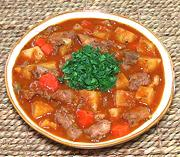

|
Chicken with Potatoes StewPuerto Rico - Fricase de Pollo con Papas y Zanahorias | ||||
| Serves: Effort: Sched: DoAhead: |
5 w/rice *** 2 hrs Yes |
A delicious stew of Chicken, Potatoes & Carrots. It can be made with joints, or with skinless, boneless meat. This recipe can be made ahead and reheats well. See also Comments. | |||
|
|
1-1/2 ------- 2/3 1/3 2 ------- 1/3 1-1/4 7 1-1/2 2/3 1-1/2 3 1/3 2/3 1-1/2 ------- ar |
# --- t t t --- c # oz T c c c c c --- |
Chicken Meat (2) -- Seasoning Salt Pepper, black Oregano -------- Olives, grn (3) Potatoes (4) Carrots Olive Oil Sofrito (1) Tomato Sauce (5) Bay Leaves Golden Rum Wine, red Water -- Serve With Steamed Rice (6) |
Do Ahead - (50 min, including making Alcaparrado for the Sofrito) Prep - (35 min)
|